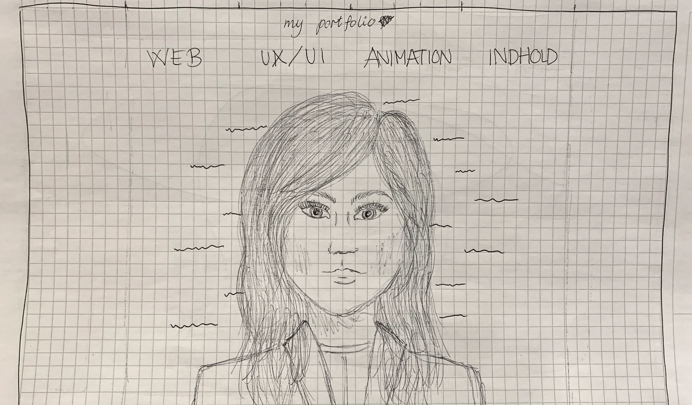
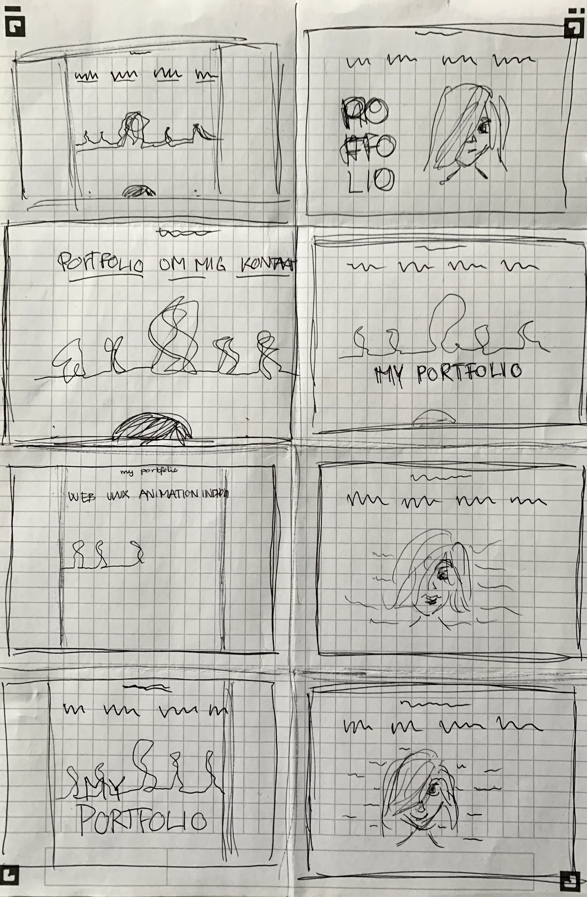
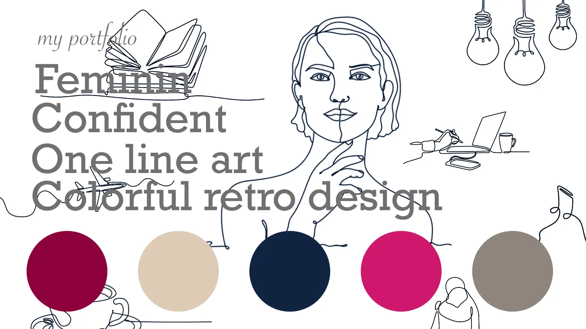
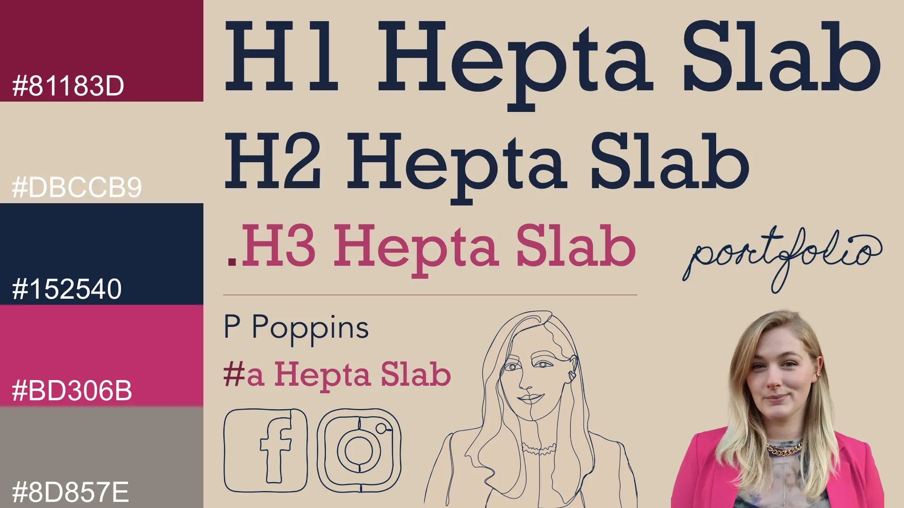
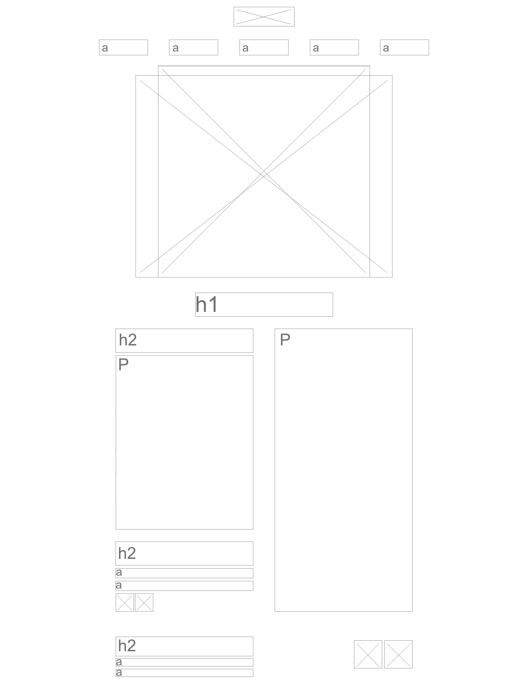
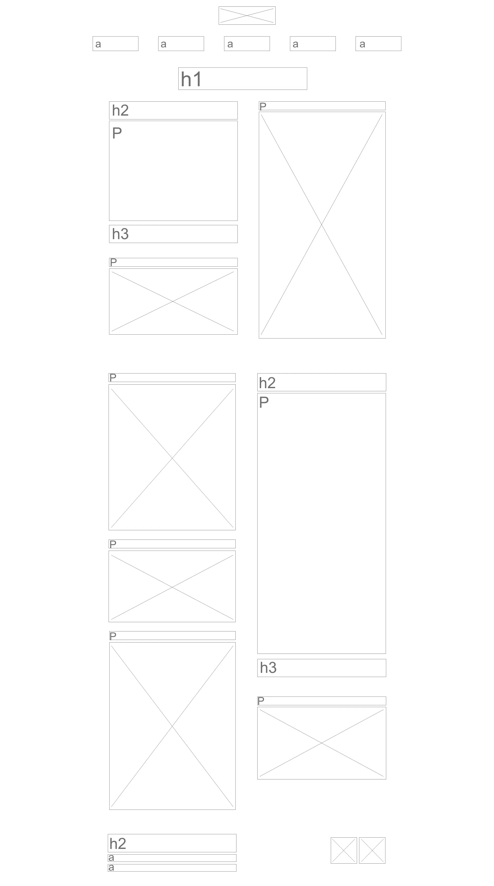
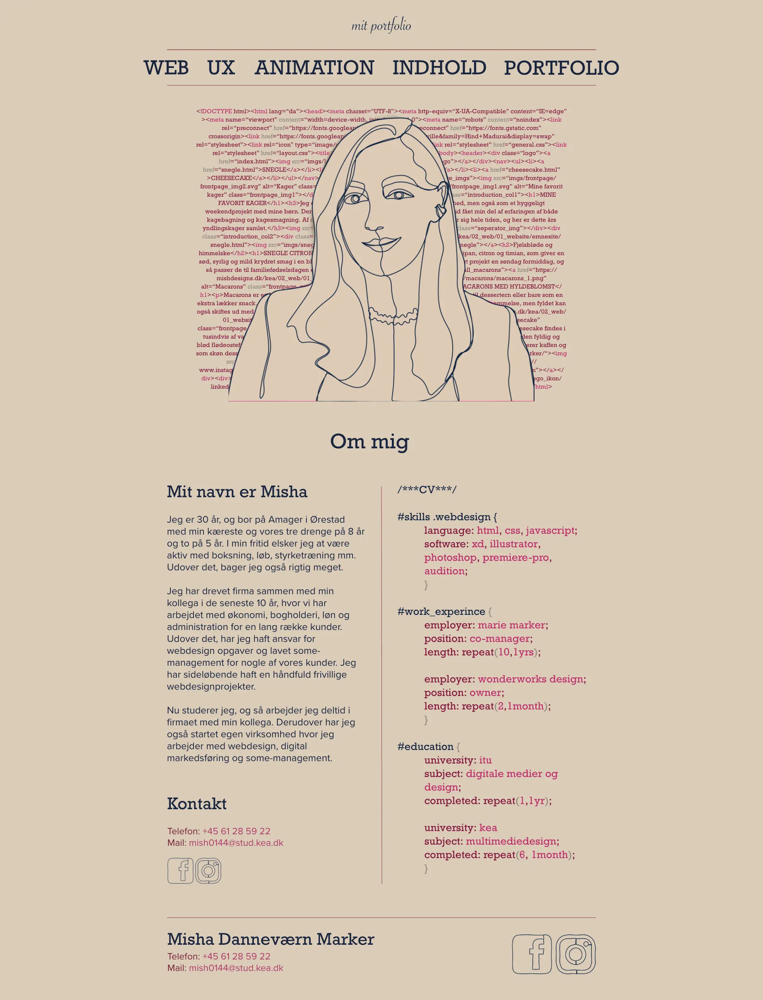
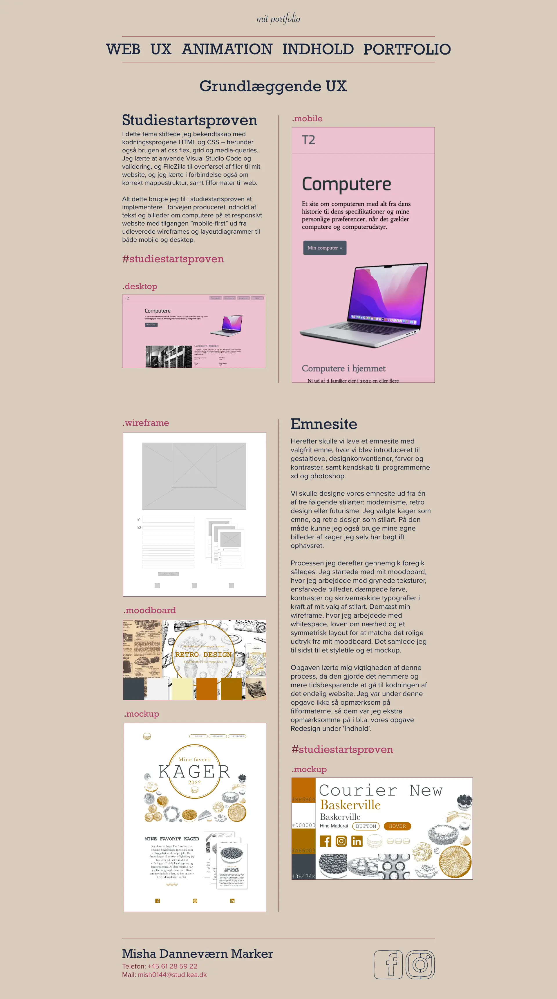

Portfolio
Idé
Jeg startede min idé med lave desk research på andre kreative portfolio sites af frontend designere. Jeg blev inspireret af one line art, feminine og minimalistiske design, og jeg havde også en idé om at få udtrykt de to sider af erhvervet – kodning og design. Dernæst begyndte jeg at skecthe på min idé, og jeg ville lave et symmetrisk layout med brug designprincippet whitespace og med særlig tanke på loven om nærhed, så sitet blev i den minimalistiske stilart og sitet blev let overskueligt. Jeg benyttede mig også af crazy8s, som endte med give mig en løsning jeg ville arbejde videre med.
.skitse
.crazy8s
Moodboard og styletile
I mit moodboard arbejdede jeg videre med one line art og de feminine udtryk, og bevægede mig over i en mere retro stilart, der faldt i fin tråd med den hjemmeskriblede one line art. Jeg valgte afdæmpede farver, men med et bevidst brud på stilartens regler i mit valg af accentfarve. Her har jeg valgt en skarp pink, der sammen med resten skulle give sitet et selvsikkert og unikt udtryk, samt understøtte det feminine vibe.
På mit styletile har jeg valgt at arbejde videre med retro stilarten, og valgt 2 fonte til min copy og mikrocopy, som er valgt med henblik på stilartens typiske skrivemaskine font. På mit styletile er der også min selvproducerede ikoner lavet som one line art, samt et portræt i samme stil og et almindelig portræt. Dette, samt mine sketches lagde bund for stilen og kompositionen af mine wifeframes og mockups.
.wireframe
.mockup
.wireframe_index
.wireframe_underside
.mockup_index
.mockup_underside
Kode
Selvom det er en tilgang jeg finder svær, da jeg ofte tænker min idé til desktop før jeg tænker den til mobil, har jeg i min kodning brugt tilgangen mobile-first, og herefter tilpasset løbende.
Jeg har ønsket at min kodning og valg af effekter skulle understøtte mit design, så jeg har gjort brug af css animationer, samt javascript. Herunder funktioner og if-else i min kodning af en elegant overgang fra det ene portrætbillede til det andet, samt en ”burger”-menu til mobilsite.
Til mit layout har jeg for det meste brugt grid i main, og brugt flexbox til header og footer. Udover det, har jeg også prøvet gøre koden så bæredygtig som mulig med så få linjer kodning som muligt, og gjort brug af variabler i både javascript og css for at opnå dette.